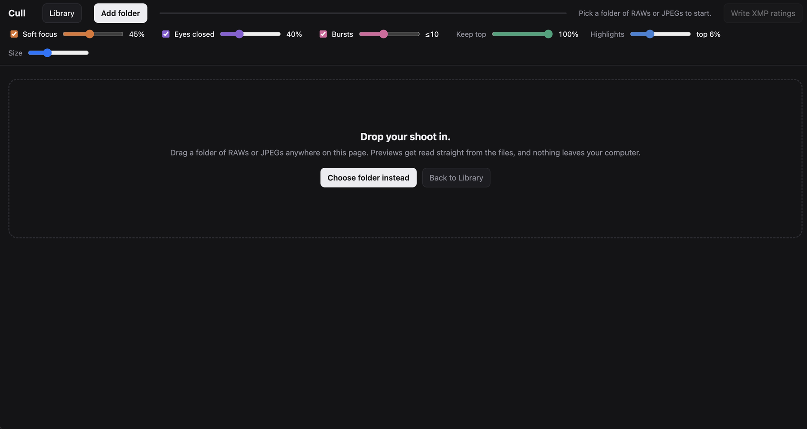
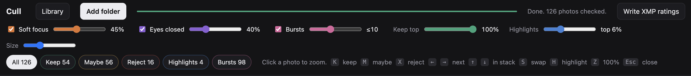
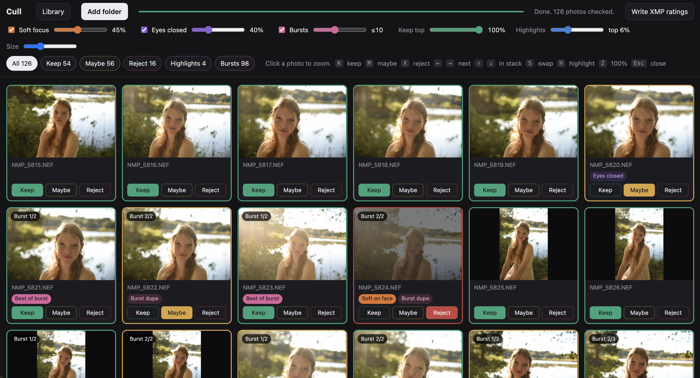
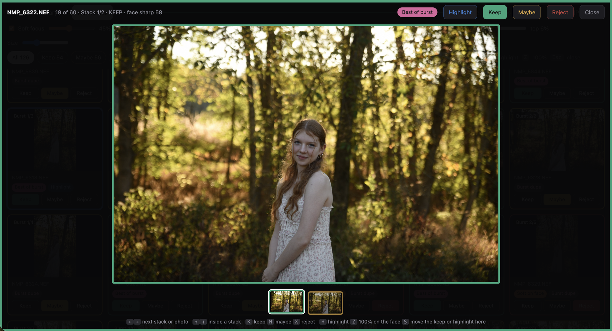
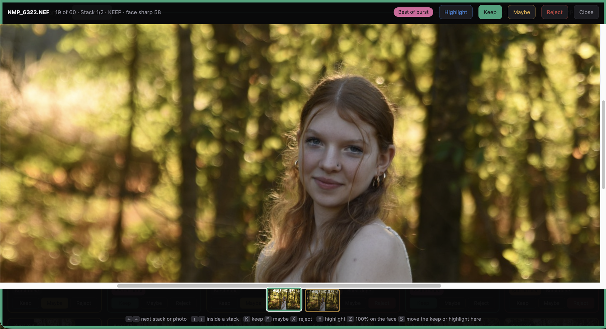
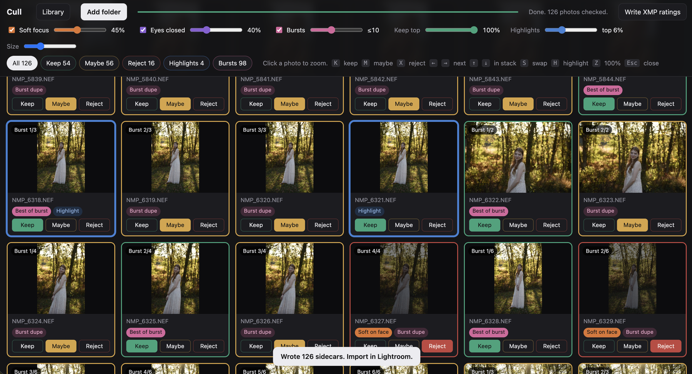
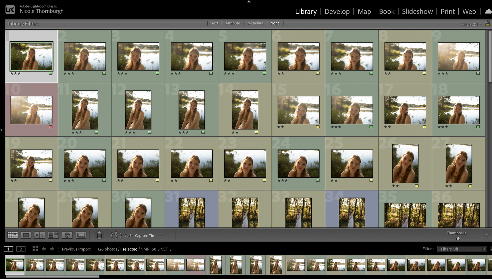
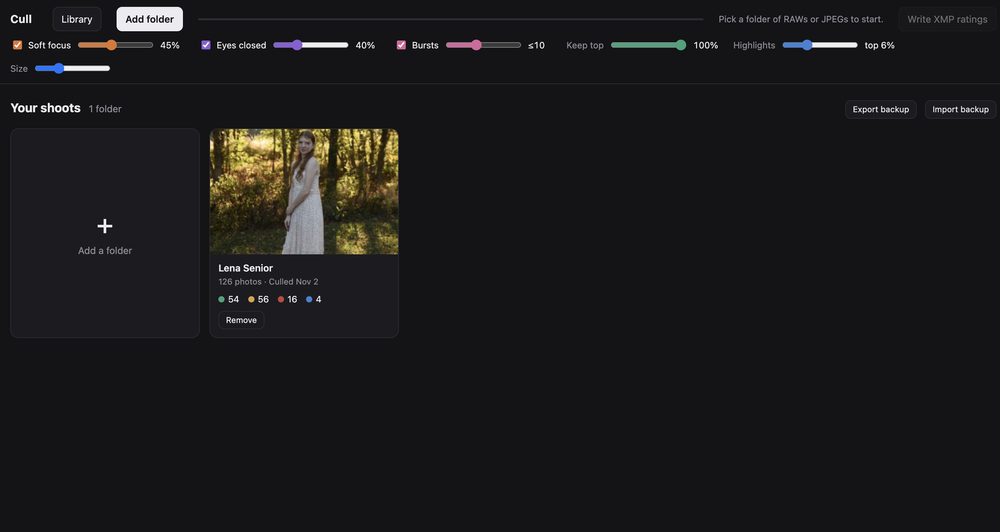

Detailed instructions
Here's the whole tour, one screen at a time. Read it start to finish, or skip to whatever you're stuck on.
Back up your work, or you can lose it
Cull has no server. Your Library, your analysis and your Keep/Maybe/Reject calls are saved in your browser, on that one computer. If you clear your cache, cookies or browsing history, they're gone. Same story if you switch browsers, profiles or computers: Cull starts out empty.
Two things protect you:
- Write XMP ratings when you finish a shoot. This saves your ratings and labels next to your photos, so Lightroom has them even if Cull forgets everything.
- Export backup from the Library every so often. This saves your list of shoots and your calls inside Cull to a
.jsonfile. Keep it somewhere safe.
Moving to a new computer? Export a backup on the old one, then Import backup on the new one. Details in step 7.
1Add a folder
Point Cull at a shoot and let it do its thing.

shots/01-add-folder.png- 1Click Add folder in the top bar to get to this screen.
- 2Drag your shoot folder onto the page...
- 3...or click Choose folder instead and pick it yourself.
- 4Your browser will ask for access to the folder. Say yes. Cull needs it to read your photos now and write the XMP files later.
- 5Cull starts analyzing. The bar at the top fills up and the status next to it tells you how many photos are done.
Cull reads RAW and JPEG files. If a photo has both, Cull counts it once and uses the RAW.
2Set the sliders
Tell Cull how picky to be. Everything updates as you slide, so play around and watch the grid change.

shots/02-sliders.png- 1Soft focus. Move it right and Cull gets pickier, flagging more photos as soft. Move it left and more photos get a pass. If a photo has faces, Cull checks the face, not the background.
- 2Eyes closed. Move it left to catch more blinks. Move it right and Cull only flags eyes that are clearly shut.
- 3Bursts. Move it right and frames can look less alike and still land in the same stack, so you get bigger stacks. Move it left and only near-identical frames stack together.
- 4Keep top. All the way right (100%), every photo that passes the checks stays a Keep. Move it left and Cull bumps the weaker ones down to Maybe.
- 5Highlights. Cull picks out your best of the best, the sharp, well-exposed shots with good expressions that are most likely worth sharing, and marks them blue. Move it right for more, left for fewer. All the way left turns it off, and you choose your own.
- 6Tabs. Filter the grid by All, Keep, Maybe, Reject, Highlights or Bursts.
The checkbox next to Soft focus, Eyes closed and Bursts turns that check off entirely. Size just makes the tiles bigger or smaller.
3Review the grid
Cull makes a first pass. You get the final say.

shots/03-grid.png- 1Every photo gets a colored border showing Cull's call: green for Keep, gold for Maybe, red for Reject, blue for Highlight. Click the photo to open it full size.
- 2The little pills under each photo tell you why Cull made that call. You'll see things like soft focus, eyes closed, best of burst or burst dupe.
- 3Disagree with Cull? Click Keep, Maybe or Reject to change it. The tile then says "Your call" so you can tell what you changed.
- 4Photos in a burst get a badge like "Burst 2/3," so you know which frame of the stack you're looking at.
What the colors mean
| Color | Meaning |
|---|---|
| Green | Keep |
| Gold | Maybe |
| Red | Reject |
| Blue | Highlight |
| Orange pill | Soft focus |
| Purple pill | Eyes closed |
| Pink pill | Best of burst / Burst dupe |
Your calls save as you go, so you can close the tab and come back to the same shoot.
4Full-size viewer and shortcuts
Click any photo to open it. This is where most of the culling happens.

shots/04-viewer.png- 1Across the top you'll see the file name, where you are in the shoot, and the reasons behind Cull's call.
- 2The Highlight, Keep, Maybe and Reject buttons change the call. They do the same thing as the keyboard shortcuts below.
- 3Click the photo to zoom in where you clicked, or press Z to jump to 100% on a face. Drag to move around.
- 4On a burst, the strip shows every frame in the stack. Click one to jump to it.

shots/04b-zoom.pngZoomed to 100% on a face. Handy for checking eyes and focus.
Keyboard shortcuts
These work while a photo is open full size.
| Key | Action |
|---|---|
| ← → | Next stack or photo |
| ↑ ↓ | Move through a burst stack |
| K M X | Keep / Maybe / Reject |
| H | Highlight |
| S | Move the Keep or Highlight to this frame |
| Z | Zoom to 100% on a face |
| Esc | Close |
Picking a different frame from a burst
Cull picks one frame per burst and labels it Best of burst. Want a different one? Arrow over to the frame you like and press S. The Keep (or Highlight) moves there and the old frame drops to Maybe.
5Write XMP ratings
Happy with your calls? Time to send them over.

shots/05-write-xmp.png- 1Click Write XMP ratings. It turns on once the analysis is done.
- 2A message tells you how many files were written.
Cull puts an .xmp file next to each photo. If one's already there, Cull adds to it and leaves your other edits alone.
What Lightroom gets
| Your call | Lightroom gets |
|---|---|
| Keep | 3 stars, green |
| Maybe | 2 stars, yellow |
| Reject | Rejected, red |
| Highlight | 5 stars, blue |
Write XMP as many times as you want. Each time, the rating and label update to match your latest calls.
6Bring it into Lightroom
Cull doesn't send anything to Lightroom directly. It writes the XMP files, and Lightroom reads them when you import.

shots/06-lightroom.png- 1Your stars and color labels come in with the photos.
- 2Filter by rating or label to jump straight to your Keeps and Highlights.
New to your catalog
Import the shoot folder like you always do. The ratings and labels come along.
Already in your catalog
Select the photos or the folder, then choose Metadata > Read Metadata from Files.
7Library and backups
Every shoot you cull lands in your Library, so you can pick up where you left off.

shots/07-library.png- 1Library in the top bar gets you back here anytime.
- 2Export backup and Import backup.
- 3Each card shows the cover, the photo count, and your Keep, Maybe, Reject and Highlight totals. Click one to reopen the shoot.
- 4Remove takes a shoot off the list. Your photos aren't touched.
Keeping it safe
- When you finish a shoot, click Write XMP ratings.
- Every so often, hit Export backup.
Switching computers
- On the old computer, click Export backup.
- Copy the
.jsonfile to the new one. - Open Cull there and click Import backup.
- Click each shoot marked Folder needs linked and pick its folder.
Backups hold names, counts, covers and your calls. Photos and folder locations stay behind.
If a folder moves
Rename or move a shoot folder and its card says Folder not found. Click Locate folder and point Cull at the new spot.